How should colour be spread across FlowBridge?
Five ways to distribute dark, light and orange across the home page, carried through to Sign in, Create workspace and Docs. Scroll inside each home page preview to see the whole page, or open it live.
1. Current
CurrentDark top, then light sections with one dark band for failures, and a dark closing section.
Home sections, top to bottom: Dark · light · light · dark · light · dark
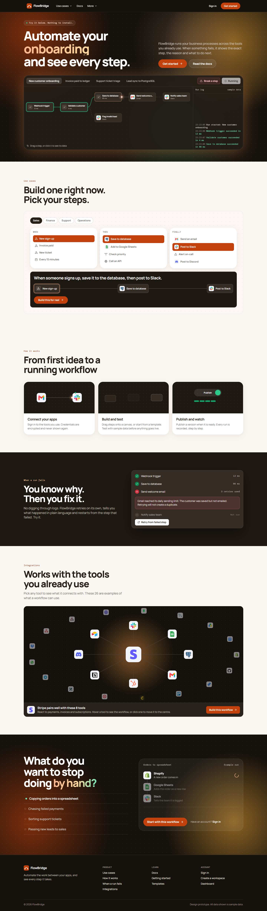
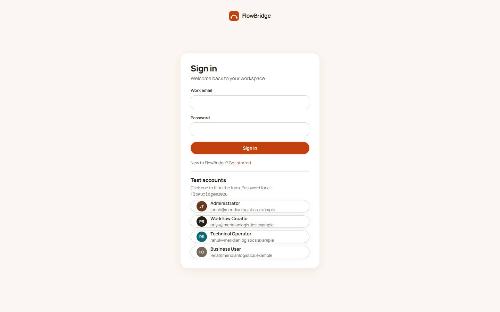
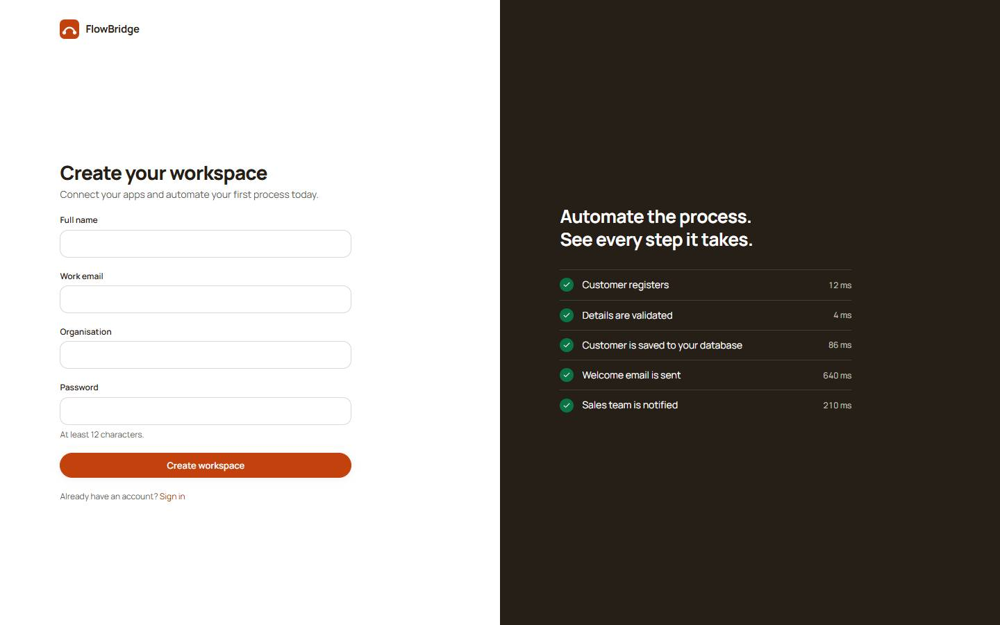
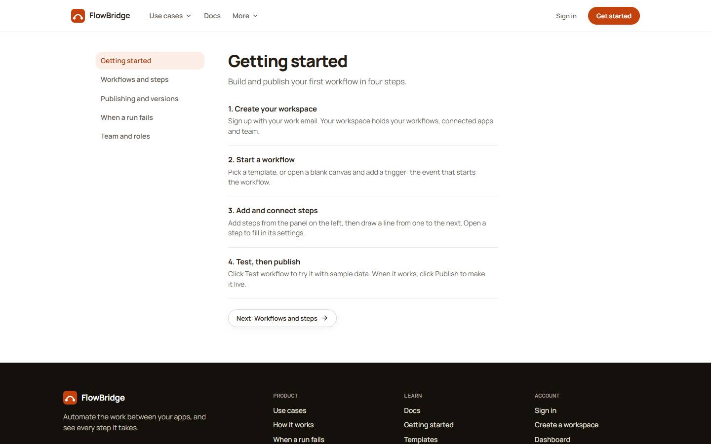
2. Dark throughout
Every section is dark charcoal, in two alternating shades, with orange used only for accents. Closest to the n8n feel, and the most consistent.
Home sections, top to bottom: Dark · dark · dark · dark · dark · dark
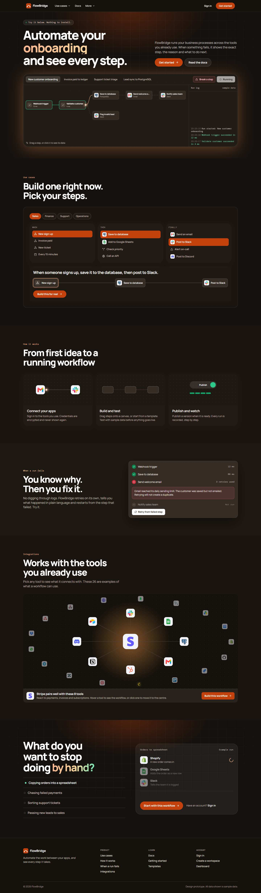
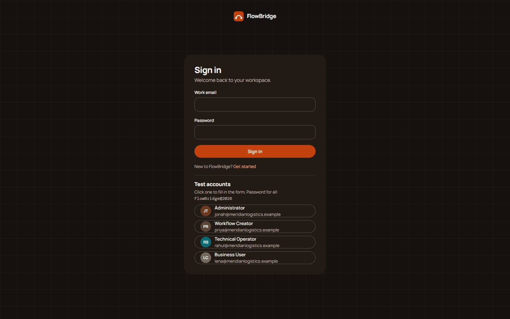
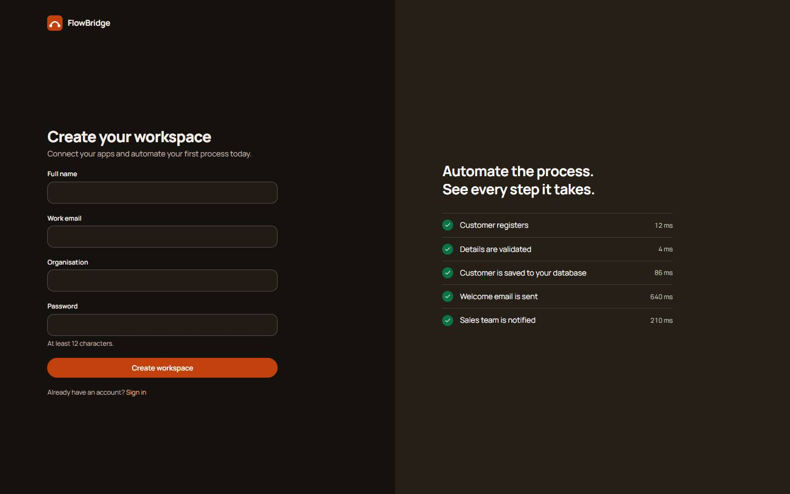
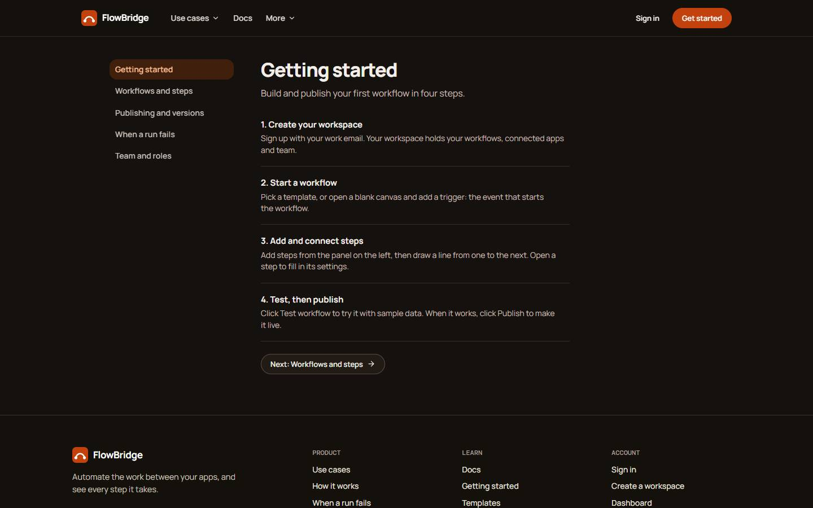
3. Light first
A light, warm top section with the dark demo as the focus. Everything stays light except the failures band and the closing section.
Home sections, top to bottom: Light · light · light · dark · light · dark
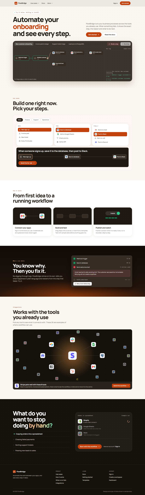
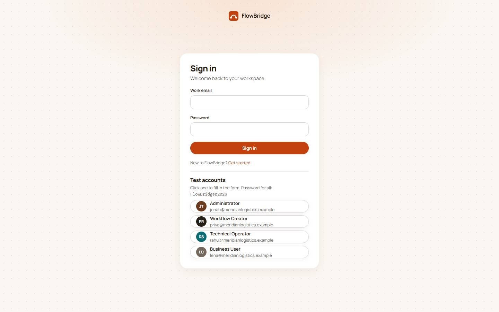

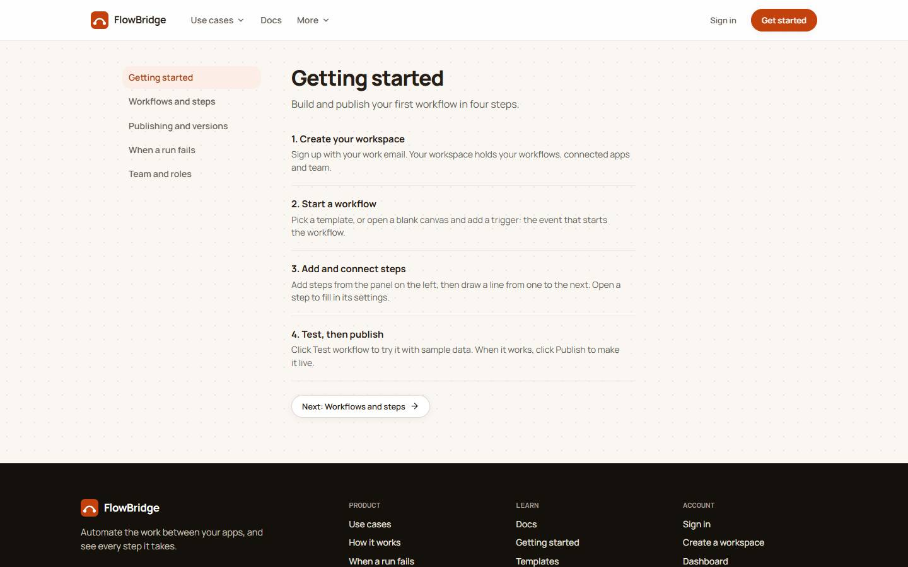
4. Warm rhythm
A dark top with a low orange horizon, then light sections that alternate between paper and warm sand, and a deep rust band for failures.
Home sections, top to bottom: Dark · paper · sand · rust · paper · dark
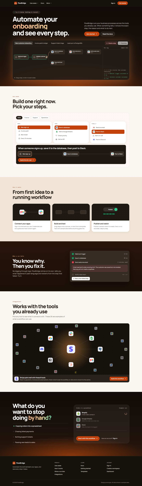
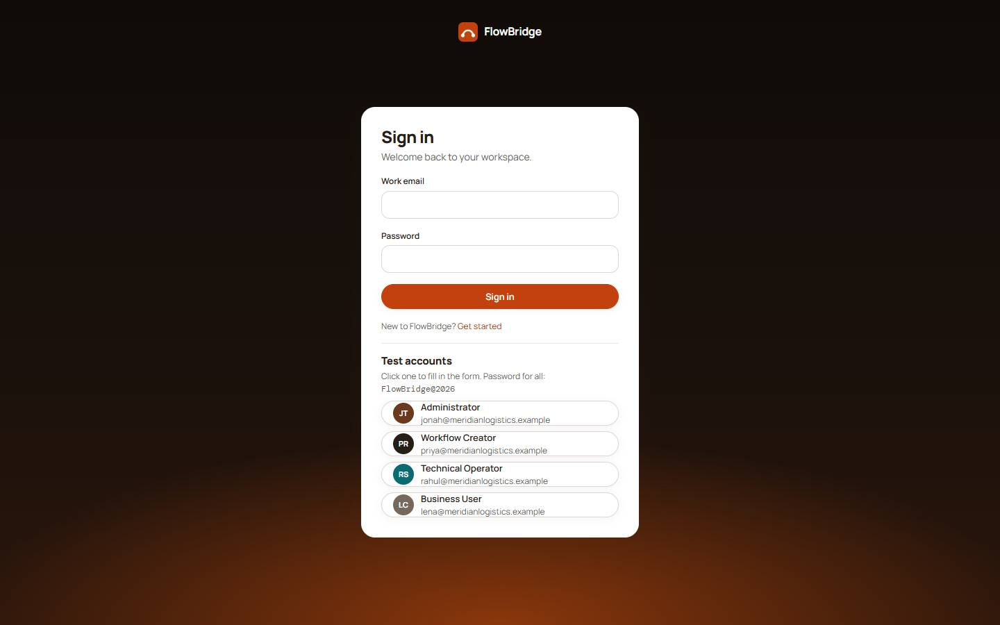
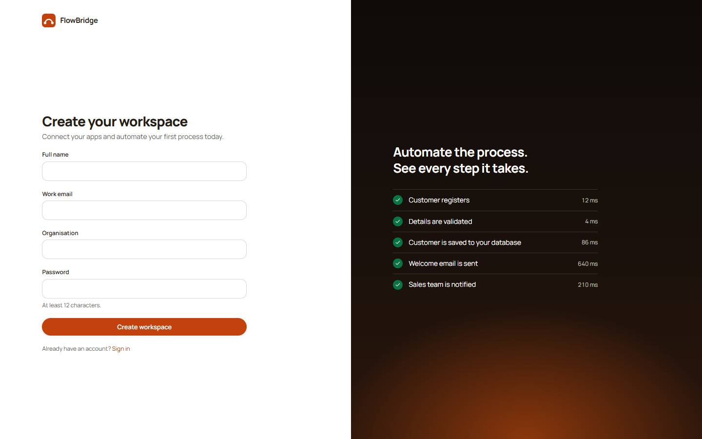
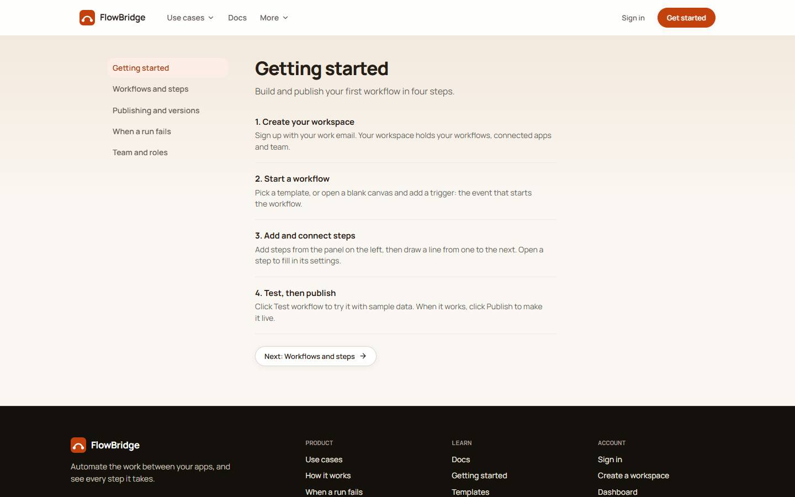
5. Orange closer
Like the current layout, but cleaner glows and a bold orange closing section, so the final call to action stands out.
Home sections, top to bottom: Dark · light · light · dark · light · orange
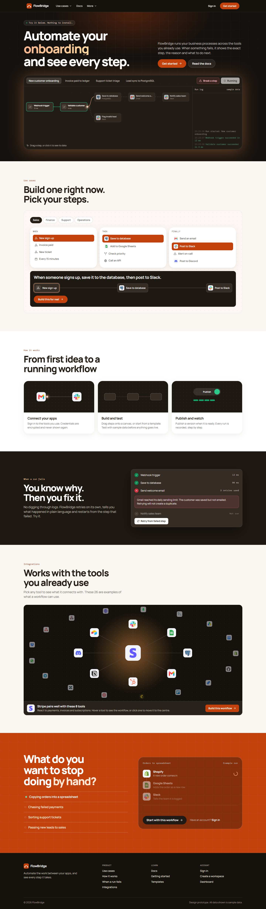
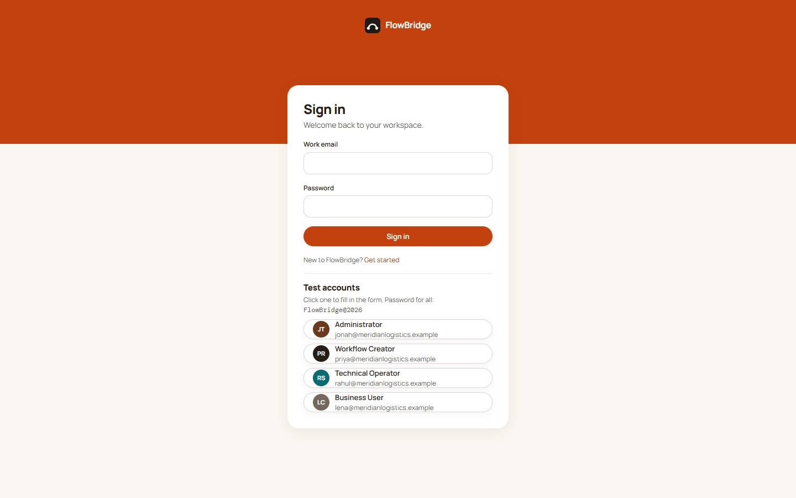
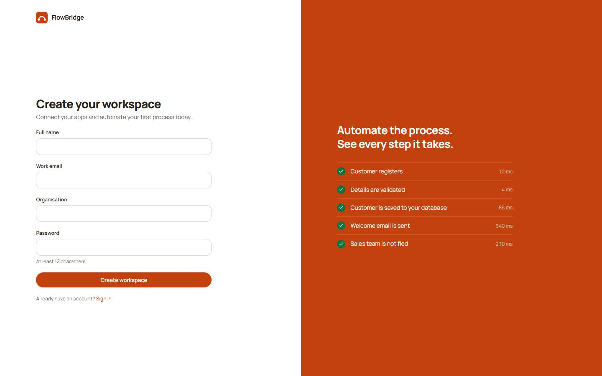